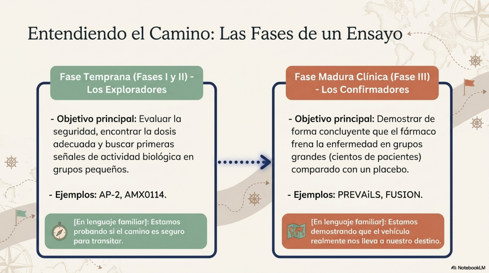
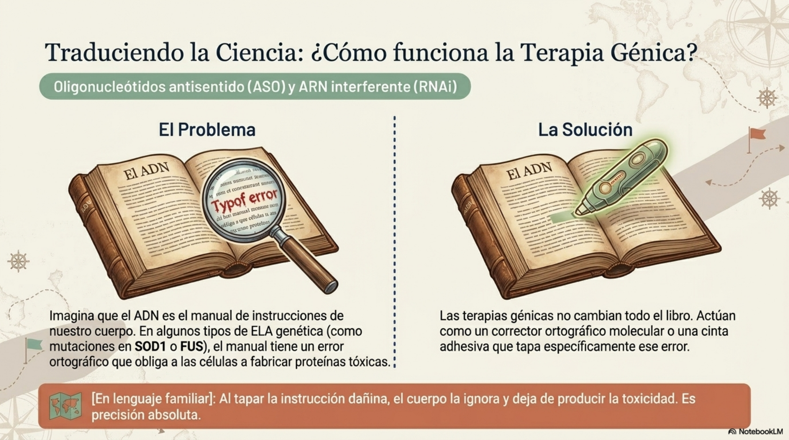
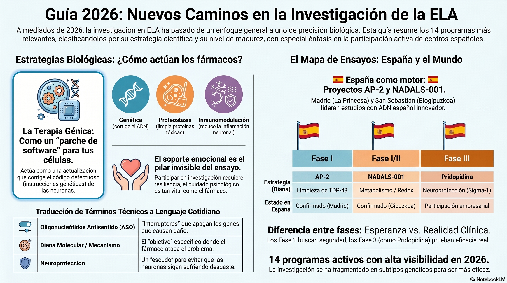
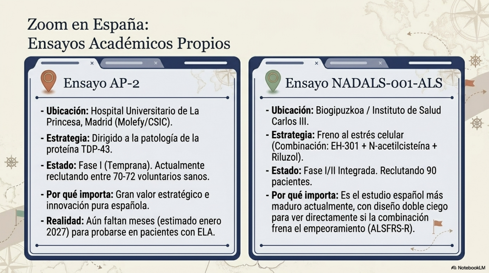
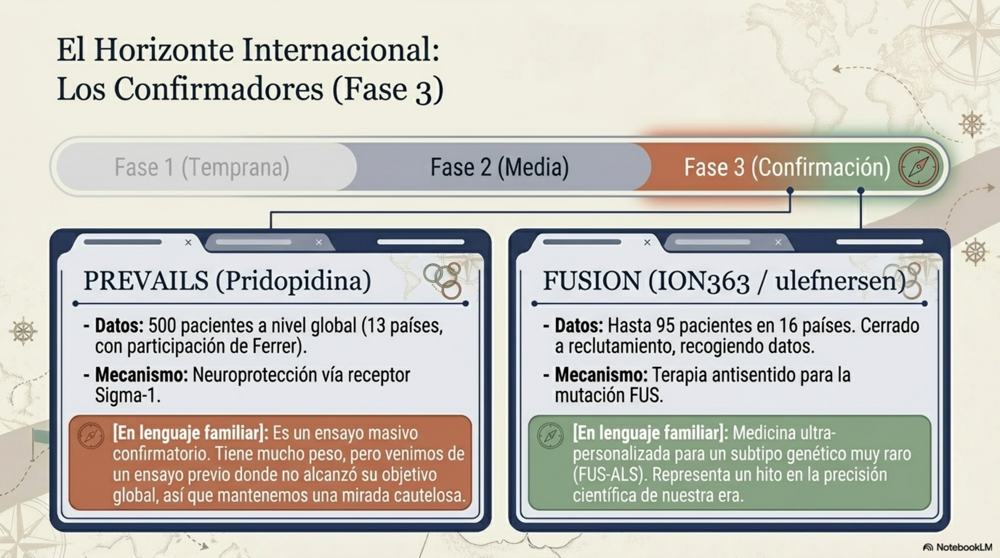
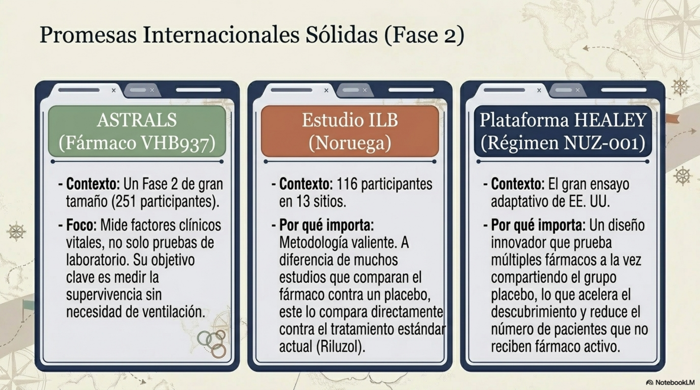
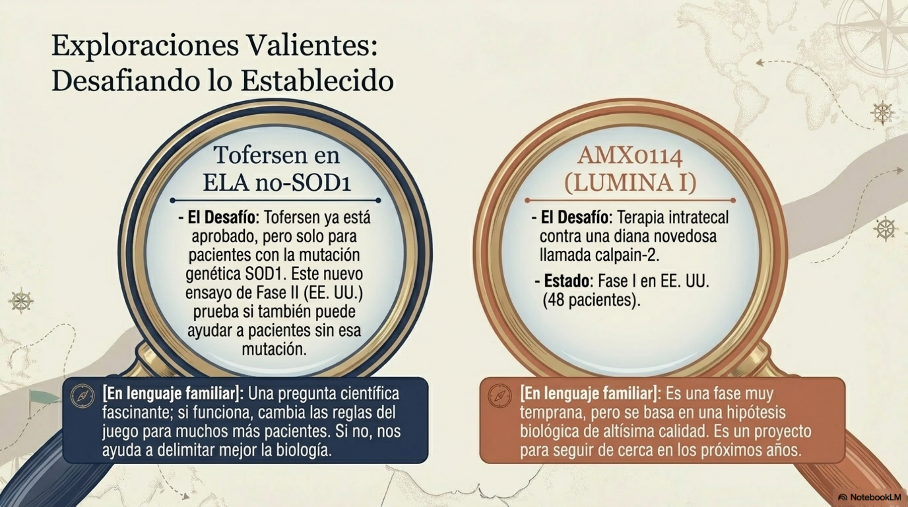
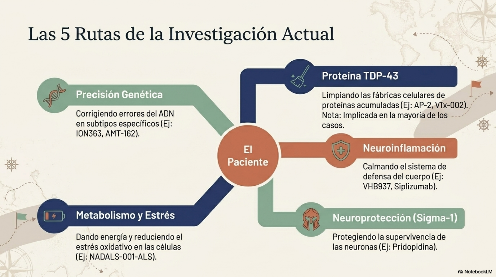
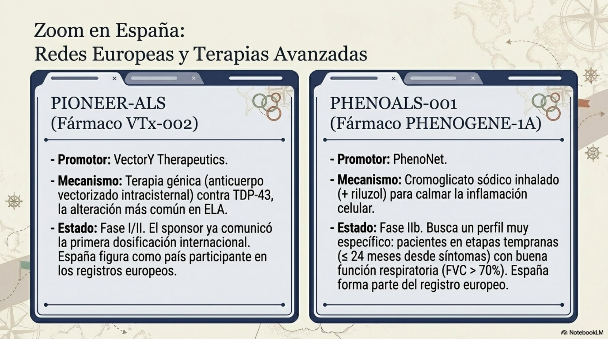

PREVAiLS con pridopidina es el programa más visible por fase y tamaño.
Informe de investigación clínica
Ensayos farmacológicos en ELA
Una lectura ordenada de los ensayos clínicos farmacológicos activos o administrativamente vivos a mediados de 2026, separando la participación española de los programas internacionales y destacando qué líneas científicas conviene vigilar con más atención.
La investigación en ELA se mueve deprisa. Esta página no sustituye la consulta de los registros oficiales ni implica recomendación terapéutica: sirve como mapa para entender el terreno.
Resumen ejecutivo
La revisión localiza con alta confianza al menos 14 programas farmacológicos interventionales activos o administrativamente en curso, además de varios programas completados o suspendidos que siguen siendo importantes para interpretar el campo.
En España destacan AP-2 en Madrid, NADALS-001-ALS impulsado por Biogipuzkoa y la presencia de España en PIONEER-ALS con VTx-002 y PHENOGENE-1A, aunque en estos dos últimos casos los centros concretos no aparecen de forma abierta en las fuentes revisadas.
Ensayos o programas muestran participación española confirmada o presencia país.
Líneas dominantes: sigma-1, RNA/ASO, TDP-43, inflamación y metabolismo/redox.
No hay promesa de eficacia: el mapa es esperanzador, pero todavía incierto.


Guía visual 2026
Esta síntesis visual resume el cambio de enfoque: menos promesas genéricas y más programas estratificados por mecanismo, fase y presencia real en España.

Vídeo de referencia

Ver el vídeo en YouTube
Acceso directo al material audiovisual asociado a esta página sobre investigación, ensayos clínicos y nuevos caminos terapéuticos en ELA.
Ensayos en España
Esta tabla conserva el núcleo de estudios con participación española visible o confirmable. Cuando el hospital concreto no se ha podido verificar en abierto, se indica como presencia de país.
| Fármaco / estrategia | Ensayo / ID | Fase | Estado público al 14-06-2026 | Centro o país España | Promotor / financiación | Fuente |
|---|---|---|---|---|---|---|
| AP-2 | Ensayo first-in-human AP-2 | I | Activo En ejecución inicial tras autorización de AEMPS | Hospital Univ. de La Princesa, Madrid | Molefy Pharma; desarrollo originado en CSIC; financiación pública/privada no totalmente desglosada en abierto | Comunidad de Madrid / IIS La Princesa / CSIC / Molefy |
| EH-301 + N-acetilcisteína + riluzol | NADALS-001-ALS, NCT07414212, EU CT 2024-519857-13-00 | I/II integrada | Reclutando | 1 sitio en España; promotor Biogipuzkoa | Asociación Instituto Biogipuzkoa; financiación pública Instituto de Salud Carlos III | ClinicalTrials.gov / Veeva / CTIS-derived public mirror |
| VTx-002 | PIONEER-ALS, NCT07287397, EU CT 2025-522697-37-00 | I/II | Discrepancia pública CTIS muestra “recruitment pending” y el sponsor comunicó primer participante dosificado |
España entre los países CTIS; centros españoles no públicos | VectorY Therapeutics; financiación privada | CTIS / ClinicalTrials.gov / sponsor / MND Association |
| PHENOGENE-1A cromoglicato sódico inhalado + riluzol | PHENOALS-001, NCT07142291, EU CT 2025-520688-42-00 | IIb | Reclutando | Participación de España en el registro europeo reexpuesto; centros no públicos | PhenoNet, Inc.; financiación industrial | ClinicalTrials.gov / Veeva / CTIS-derived public mirror |
{kind=link}
{kind=link}
{kind=link}
{kind=link}
Ensayos internacionales
La cartera internacional combina programas globales de fase avanzada, estudios de precisión genética y ensayos tempranos con mecanismos muy concretos.
| Fármaco | Ensayo / ID | Fase | Estado | Países / red | Comentario clave | Fuente |
|---|---|---|---|---|---|---|
| Pridopidina | PREVAiLS, NCT07322003, EU CT 2025-524002-16-00 | III | Reclutando | Global, hasta 13 países | 500 participantes; 48 semanas doble ciego + 48 abierta; agonista sigma-1 | ClinicalTrials.gov / sponsor / trial site / CTIS |
| ION363 / ulefnersen / jacifusen | FUSION, NCT04768972 | III | Reclutamiento cerrado Datos en recogida |
16 países | Terapia antisentido en FUS-ALS; estudio ultra-dirigido | Veeva / MND Association |
| VHB937 | ASTRALS, NCT06643481, EU CT 2024-512536-29-00 | II | Activo, sin reclutamiento |
Europa / Canadá / EE. UU. | 251 participantes; 40 semanas + extensión abierta | ClinicalTrials.gov / Veeva |
| AMX0114 | LUMINA | I | Reclutando | EE. UU. | ASO intratecal contra calpain-2; 48 participantes | Veeva |
| Tofersen en ELA no-SOD1 | Estudio fase II | II | Reclutando | EE. UU. | Prueba de concepto para extender un ASO aprobado para SOD1 a población no-SOD1 | Veeva |
| NUZ-001 | HEALEY Regimen I, NCT07410806 | II/III | Reclutando | EE. UU. | Nuevo régimen del HEALEY ALS Platform Trial | ClinicalTrials.gov / MGH / Cleveland Clinic |
| AMT-162 | EPISOD1, NCT06100276 | I/II | Activo, sin reclutamiento |
Multinacional | Terapia génica intratecal para SOD1-ALS | Veeva / TRICALS |
| Siplizumab | AURORA, NCT06453668, EU CT 2023-506174-12-00 | I | Reclutando | Suecia | Inmunomodulación; fase I en ELA recién diagnosticada | Veeva / CTIS-derived public mirror |
| ILB comparado con riluzol | EU CT 2024-513927-18-00 | II | Reclutando | Noruega | Comparador activo frente a riluzol; 116 participantes | CTIS-derived public mirror |
| LTX-002 | NeurALS / LTX-002-101, EU CT 2025-522039-33-00 | I / I-II | Abierto / iniciándose |
Alemania, Italia, Países Bajos, Suecia | ASO intratecal dirigido a SPTLC1; visibilidad pública aún parcial | TRICALS / sponsor / public EU mirror |
| RAG-17 | NCT06556394 | I, con transición anunciada a II | Activo con desfase de registro |
China | siRNA intratecal para SOD1-ALS; sponsor anunció paso a fase II en 2026 | Veeva / sponsor / pipeline |
{kind=link}
{kind=link}
{kind=link}
{kind=link}
{kind=link}
{kind=link}
{kind=link}
{kind=link}
{kind=link}
{kind=link}
{kind=link}
Programas clave, explicados sin perderse
AP-2 Activo
Ensayo de origen académico nacional, con mecanismo dirigido a TDP-43 y transición desde preclínica hacia primera administración en humanos.
Empieza en fase I con voluntarios sanos en La Princesa. Si progresa, la fase Ib en pacientes se plantea a partir de enero de 2027. Su relevancia clínica sigue siendo hipotética.
NADALS-001-ALS Reclutando
Evalúa EH-301 + N-acetilcisteína sobre fondo de riluzol, con 90 participantes y diseño aleatorizado, doble ciego y controlado con placebo.
Es el estudio español más maduro de los confirmados: combina promotor académico, financiación pública del ISCIII y una lectura clínica centrada en ALSFRS-R.

PREVAiLS / pridopidina Fase III
Programa global de 500 participantes, 48 semanas doble ciego y extensión abierta de 48 semanas. La diana es el receptor sigma-1.
Merece vigilancia preferente por tamaño y fase, pero con prudencia: el salto se apoya en análisis de subgrupo de un programa previo que no alcanzó su objetivo principal global.
FUSION / ulefnersen Datos en recogida
Uno de los programas de medicina de precisión más avanzados en formas genéticas raras: terapia antisentido intratecal dirigida a FUS-ALS.
Su atractivo es la población molecularmente definida; su limitación, el tamaño pequeño y la rareza extrema del subtipo.

ASTRALS / VHB937 Fase II
Ensayo sustantivo, con 251 participantes, criterios relativamente tempranos y desenlaces clínicos relevantes como supervivencia libre de ventilación permanente y ALSFRS-R.
Tiene más peso interpretativo que muchos estudios tempranos, aunque la diana molecular concreta no aparece descrita con suficiente claridad en las fuentes revisadas.
AMX0114 Reclutando
ASO intratecal contra calpain-2, no restringido a ELA genética. Incluye seguridad, tolerabilidad y biomarcadores de neurodegeneración e inflamación.
Es uno de los candidatos tempranos más interesantes por mecanismo, pero sigue siendo fase I.


Mecanismos y lectura crítica

Oligonucleótidos y RNA
{kind=link}
ION363/ulefnersen, RAG-17, AMT-162, AMX0114 y LTX-002 representan la línea más molecularmente precisa. Ganan claridad biológica, pero fragmentan mucho a los pacientes por subtipo.
TDP-43 y proteostasis
{kind=link}
AP-2 y VTx-002 apuntan a una diana central en la ELA. El impacto potencial sería enorme, pero el riesgo translacional también lo es: son programas todavía muy tempranos.
Neuroinflamación
{kind=link}
VHB937, siplizumab e ILB trabajan sobre rutas inflamatorias o inmunomoduladoras. La clave será combinar clínica, respiración y biomarcadores robustos.
Sigma-1 y neuroprotección
{kind=link}
Pridopidina es el candidato más visible de este bloque. Su fortaleza es el fase III global; su debilidad, el origen en señales de subgrupo.
Metabolismo y redox
{kind=link}
NADALS-001-ALS explora una combinación orientada a metabolismo celular y estrés oxidativo, con diseño clínico ya interpretable.
Señales de advertencia
{kind=link}
Masitinib figura suspendido, dazucorilant no cumplió su objetivo primario y programas como MAGNET-lithium o VRG50635 recuerdan que una buena hipótesis no basta.
Participación española
La participación española confirmada y visible se concentra en tres polos. El primero es Madrid, con La Princesa / IIS La Princesa / CSIC / Molefy y el arranque de AP-2. El segundo es Biogipuzkoa, que impulsa NADALS-001-ALS con financiación del Instituto de Salud Carlos III. El tercero aparece como presencia de país en registros europeos para VTx-002 y PHENOGENE-1A, aunque sin centros hospitalarios concretos publicados de forma abierta.

También hay un papel empresarial español importante en pridopidina: Ferrer, desde Barcelona, forma parte del codesarrollo internacional de PREVAiLS. En las fuentes revisadas, sin embargo, no se ha podido confirmar un centro español concreto dentro de ese ensayo, por lo que conviene distinguir participación empresarial de participación hospitalaria.
Conclusiones, límites y fuentes
La cartera clínica de ELA está más diversificada y más estratificada por biología que hace pocos años. La buena noticia es metodológica: hay más subtipos, biomarcadores y dianas concretas. La dificultad es que esa misma precisión fragmenta la lectura y hace más compleja la comparación entre ensayos.
Las principales lagunas son la opacidad operativa de algunos registros, los desfases entre registro y sponsor y las discrepancias menores entre fuentes públicas en variables como tamaño muestral o estado de reclutamiento.
Fuentes utilizadas en el informe de base:
- ClinicalTrials.gov
- ClinicalTrials.Veeva
- CTIS / EMA y espejos públicos derivados
- Comunicados de Prilenia, Ferrer, VectorY, Molefy y Ractigen
- CSIC, Comunidad de Madrid e IIS La Princesa
- TRICALS
- MND Association
- CDC National ALS Registry